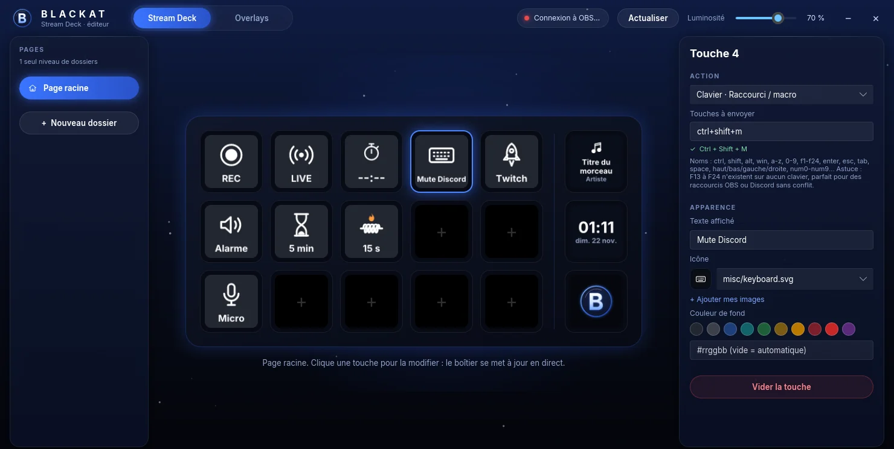
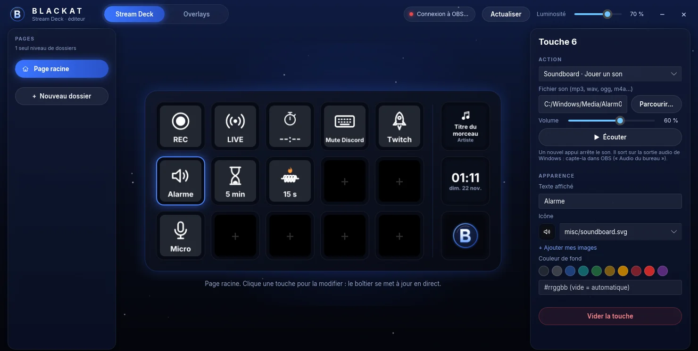
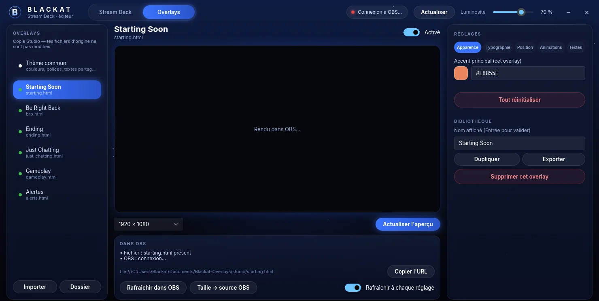
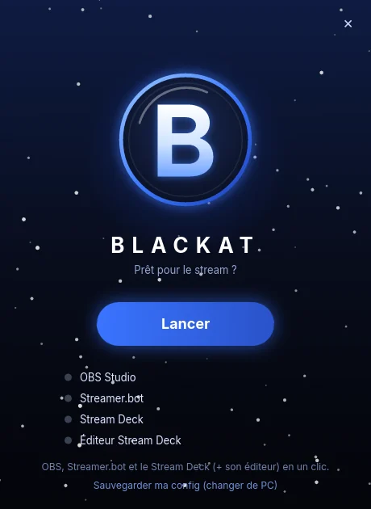

Ton Stream Deck SOOMFON,
enfin léger et utile.
Un logiciel fait maison qui remplace l'appli officielle du SOOMFON 15 touches : OBS, musique, Streamer.bot, raccourcis, soundboard… sans ralentir ton jeu ni ton live.
Installeur .msi · Windows 10 / 11 · sans droits administrateur · gratuit

Tout ce qu'il faut pendant un live
Chaque touche s'affiche avec son icône, son texte et son état réel (REC en rouge, micro coupé, scène active…). Les changements faits dans l'éditeur arrivent sur le boîtier instantanément.
OBS Studio
Changer de scène, REC et pause, lancer le live, couper un micro, afficher une source, sauvegarder le replay. Connexion automatique.
Musique
Lecture, pause, morceau suivant : la commande va au lecteur qui joue (Spotify…), pas au jeu au premier plan. Titre en cours sur l'écran latéral.
Streamer.bot
Une touche = une action Streamer.bot : clip, marqueur, message dans le chat… La liste des actions est lue directement.
Raccourcis & macros
Envoie ctrl+shift+m à Discord, ou une suite comme ctrl+c, ctrl+v. Les touches F13 à F24 évitent tout conflit.
Lancer
Ouvre un jeu, un programme, un dossier ou un site (ta chaîne Twitch, le dashboard…) d'un seul appui.
Soundboard
Joue tes sons (mp3, wav, ogg…) avec un volume par touche. Un nouvel appui coupe le son. Plusieurs sons peuvent se superposer.
Compte à rebours
Pause, giveaway, défi : le temps restant s'affiche sur la touche avec un anneau qui se vide, puis « FINI » et un petit son.
Écran latéral
L'écran à droite des touches affiche ce que tu veux : morceau en cours, heure, logo, chrono du live, scène OBS active.
Dossiers
Range tes touches dans des dossiers (memes, scènes…). Un dossier peut même se remplir tout seul avec tes scènes OBS.

Tout se règle à la souris
- Clique une touche, choisis son action dans la liste
- Icônes fournies, ou tes propres images (PNG, JPG, SVG)
- 10 couleurs de fond ou n'importe quel code
#rrggbb - Aperçu identique au boîtier, enregistrement automatique
- Démarrage avec Windows en une case à cocher
Le kit complet du stream
Deux outils de plus livrés dans le même installeur.

Overlay Studio
Tes overlays (Starting Soon, BRB, Ending…) réglés sans toucher au code : couleurs, police, textes, animations, avec l'aperçu rendu par OBS.

Lanceur Blackat
Un clic sur « Lancer » démarre OBS, Streamer.bot et le Stream Deck dans le bon ordre. Il sait aussi sauvegarder toute ta config dans un pack chiffré pour changer de PC.
Prêt en une minute
Télécharge le .msi
Depuis la page Releases du projet. Pas besoin de droits administrateur.
Lance l'installation
L'installeur n'est pas signé : si Windows affiche « Windows a protégé votre ordinateur », clique Informations complémentaires puis Exécuter quand même.
Ferme l'appli officielle
Le logiciel SOOMFON d'origine ne doit pas tourner en même temps. Ouvre ensuite Soomfon-Deck depuis le menu Démarrer pour régler tes touches.
Écrit en Rust, pensé pour le jeu
Le pilote du boîtier tourne en arrière-plan sans fenêtre et ne fait rien tant qu'on n'appuie pas sur une touche. Seules les touches qui changent sont renvoyées au boîtier. Interface en Slint, aucun navigateur embarqué, aucune télémétrie. Compatible avec le SOOMFON 15 touches (USB 5548:6670).